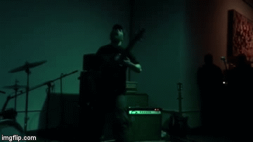

March 15, 2017
Thank you to Think Tank and The Oracle for a beautiful show last weekend!

Sun, April 16 2017 — FRKSE / Tovarish / Mariassunta (Kay's solo project) @ Dusk, Providence RI — 21+ — 8:30/9pm — $6
July 2 2017 — Haram / Pandemix / Mar @ Providence RI
July 19 2017 — Xylitol / Mar @ Providence RI
March 15, 2017
Thank you to Think Tank and The Oracle for a beautiful show last weekend!
February 17, 2017
in case you missed our last show...

February 2, 2017
This Friday (tomorrow!) 100% of Bandcamp's proceeds from sales will be donated to the ACLU, in support of their efforts to combat the disgusting racist policies put into place by President Trump.
January 23, 2017
September 28, 2016
September 19, 2016
Mar released one of my all time favorite demos in 2015. Trust In Nothing is their first full length of soul crushing doom. The two piece focus on slooooooooow and raw doom that has a nice punk feel to it. The lyrics are emotional and deal with heavy issues ("These lines aren't cuts, they're my map"). Honestly, my words can't do justice at how good Mar is. I completely adore this band and their music. If you like doom that is slow and heavy, pick this up.
- Nathan Sizemore @ xtapolapometal
August 15, 2016
New album Trust in Nothing out now!
For sale online:
Bandcamp & Dead Tank
and in real life:
Armageddon (BOS + PVD) & Analog Underground (PVD)
& MRL (PVD)
info at mar pvd dot com
P.O. Box 23285, Providence RI 02903